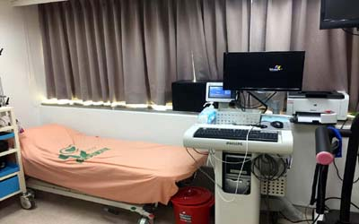
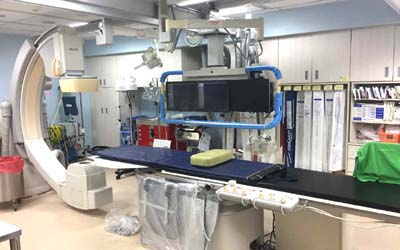

病菌消毒概念
 細菌病毒消毒,是一手段,然而在前期之防護作業更能降低感染率,我們人類無法消滅所有病毒,只能讓其危害降至最低,這不光只是消毒,而是預防,讓其生存環境,媒介減少.更能降低其感染
細菌病毒消毒,是一手段,然而在前期之防護作業更能降低感染率,我們人類無法消滅所有病毒,只能讓其危害降至最低,這不光只是消毒,而是預防,讓其生存環境,媒介減少.更能降低其感染

| ■ 醫學中心及準醫學中心: 此醫院最大型,設備完善,有詳盡的各科部門,並可提供教學工作及研究....等等 |
| ■ 區域醫院: 通常為縣市主導之區域醫院,病床數為500床以下 |
| ■ 地域醫院: 通常病床數為100床下 |
| ■ 專門醫院: 只有少數病房,或為專門科別設置. |
| ■ 診所: 從事於專科一般中醫牙科..等等診療業務之診所 |
| 醫院規模大小.及使用情況其接觸感染來源具有多方性.醫護人員.家屬.病患.都是容易交換病菌媒介其中以耳鼻喉科.小兒科,這類診所更需注意空氣之傳染. |

醫院有很多不同供能的空間,因此實施感染防治清潔必需依其使用功能區分施作.必免清潔器具互相感染 空氣是最常見傳染途俓,其中以近距離飛沫傳染占大多數.防治方法其一須有新鮮空氣.降低病菌量 |
| 診療區:門診急`診檢驗藥局..等等 |
| 醫療區病房開刀房恢附室..等等 |
| 各類病房區 |
| 事務區:行政辦公資料室.醫用倉庫..等等 |
| 職工家屬生活區:餐廳.日用品購物區..等等 |
| 其它區:洗衣區.垃圾區..等等 |

| 視覺: 這是最基本,燈光太亮太暗,髒亂...等等,以及更深入微視覺,包含含細菌.病毒...等等 |
| 嗅覺:空氣中味道,PM2.5 |
| 聽覺:隔音.噪音.等等 |
| 感覺:主要以自我覺為主在十二感官中四大基本感官作用於物質，中級感官作用於情感，高級感官作用於思考，整體對人從內到內之淨化感 |
| 運動覺:包含院內與院外花園等項目. |
| 溫暖覺:外在空調不夠冷或太冷 內在對於病人家屬之交流。 |
| 發展越文明地區,其潔淨之定義也會越高。 |

 細菌病毒消毒,是一手段,然而在前期之防護作業更能降低感染率,我們人類無法消滅所有病毒,只能讓其危害降至最低,這不光只是消毒,而是預防,讓其生存環境,媒介減少.更能降低其感染
細菌病毒消毒,是一手段,然而在前期之防護作業更能降低感染率,我們人類無法消滅所有病毒,只能讓其危害降至最低,這不光只是消毒,而是預防,讓其生存環境,媒介減少.更能降低其感染